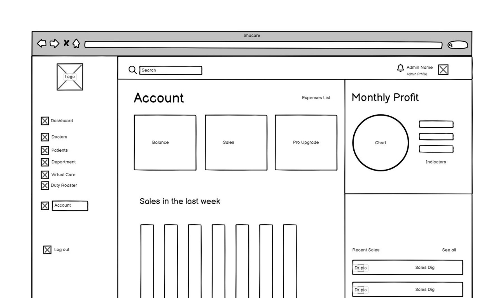
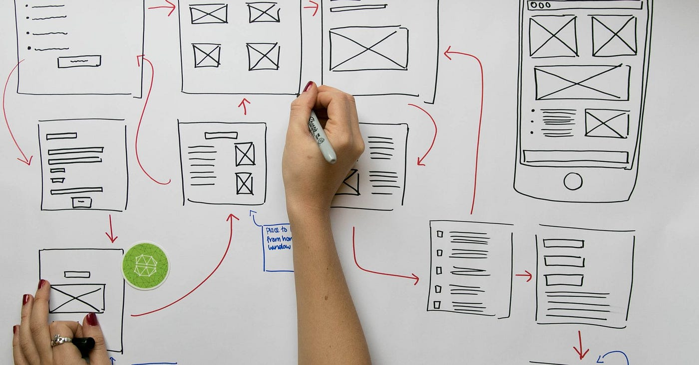
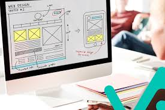
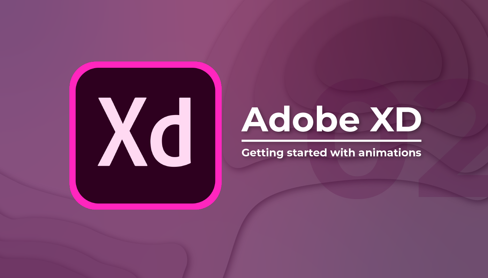

Informacion sobre que son los Wireframes, Mockups y Prototipos
Que son los Wireframes
Un wireframe es un esquema visual básico de una página web o aplicación, que muestra la estructura y disposición de los elementos principales sin detalles de diseño o contenido final. Se utiliza para planificar y organizar el contenido y la funcionalidad antes de la fase de diseño detallado.
Ventajas de los Wireframes
Claridad en la estructura
Comunicación efectiva
Detección temprana de problemas
Ahorro de tiempo y recursos
Enfoque en la funcionalidad
Desventajas de los Wireframes
Falta de detalles visuales
Posible confusión
Limitaciones en la interacción
Dependencia de la interpretación
Actualización constante
Programas para crear Wireframes
Balsamic

Sketch

Que son los Mockups
Un mockup es una representación visual de un diseño, que muestra cómo se verá el producto final con detalles de diseño y contenido. Se utiliza para visualizar y comunicar el diseño de una manera más realista y detallada que un wireframe.

Ventajas de los Mockups
Realismo visual
Comunicación efectiva
Facilidad de modificación
Feedback temprano
Enfoque en el diseño
Desventajas de los Mockups
Mayor tiempo de creación
Posible confusión
Limitaciones en la interacción
Dependencia de la interpretación
Actualización constante
Programas para crear Mockups
Adobe XD

Figma
Que son los Prototipos
Un prototipo es una versión interactiva y funcional de un diseño, que simula el comportamiento y la funcionalidad del producto final. Se utiliza para probar y validar el diseño antes de la fase de desarrollo, y para obtener feedback de los usuarios.